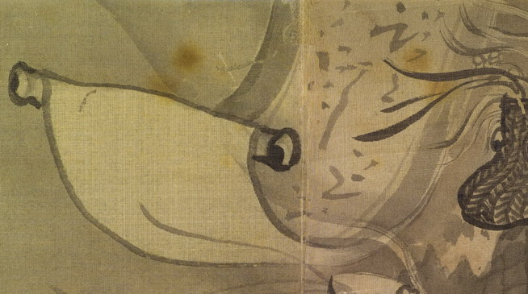

掛け軸の化物。軸の両端が目玉のようになっている。壁に掛けられており、風にあおられて、下半分が大きくまくれ上がっている。
著作者：玉川（望月玉川）／出典：親書誌：U426_nichibunken_0155：東都画家妖怪画帖；トウトガカヨウカイガチョウ／日付：2010／資源識別子：U426_nichibunken_0155_0002_0003
Copyright (c)2010- International Research Center for Japanese Studies, Kyoto, Japan. All rights reserved.